下载安装配置JDK
1. 用浏览器访问 http://www.oracle.com 网站, 选择Java开发工具下载:
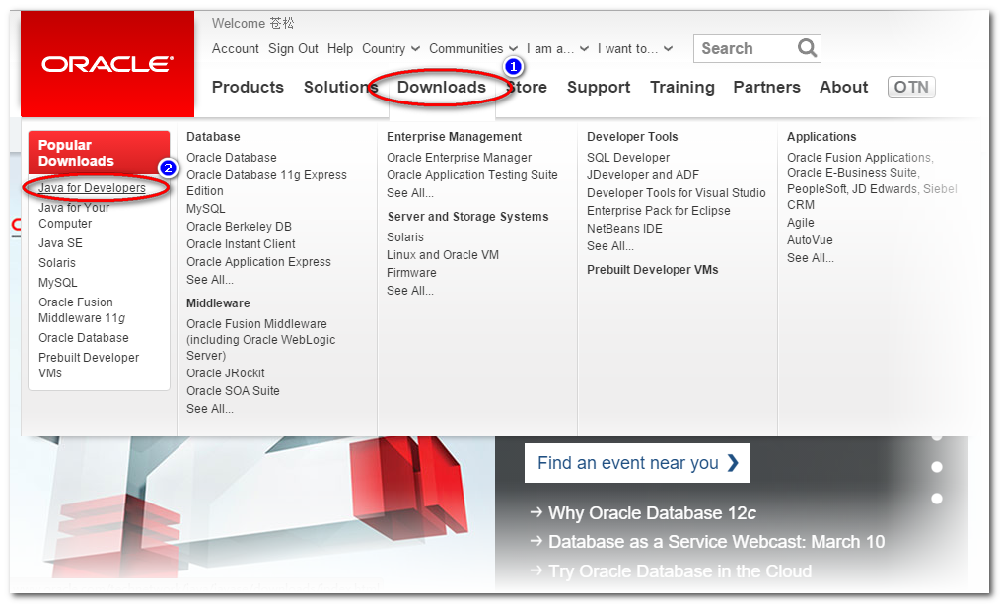
2. 选择下载Java:
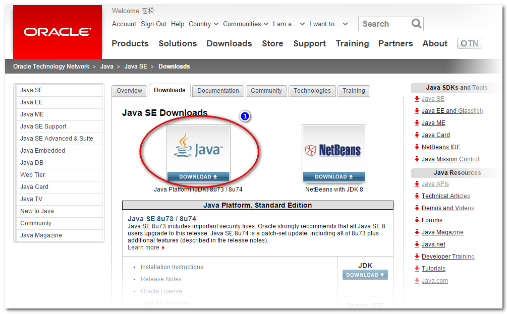
3. 接受软件许可协议以后, 下载JDK安装包:

4. 执行JDK安装包, 选择多次"下一步"完成安装:
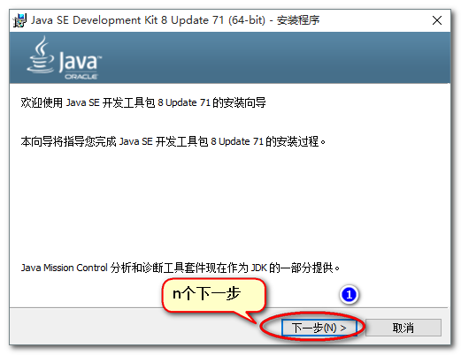
5. 安装后, 到Program Files\Java 文件夹查看安装情况:
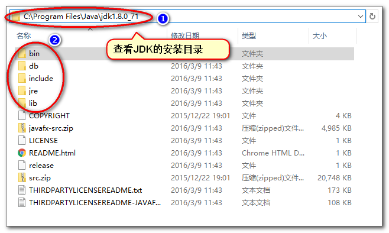
6. 在"电脑"属性中配置JDK:
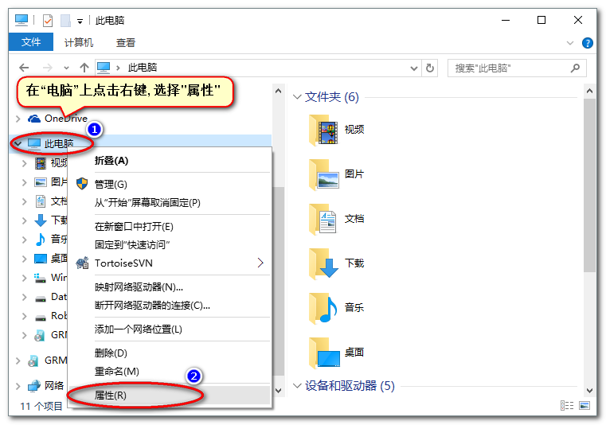
7. 选择 "高级系统设置":
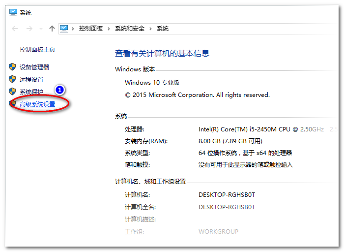
8. 点击 "高级" -> "环境变量":
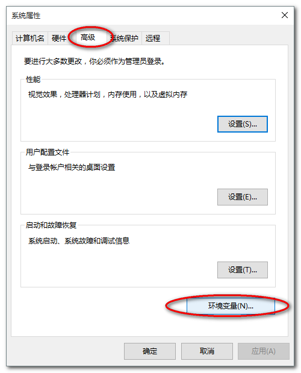
9. 增加 JAVA_HOME 环境变量, 其值指向JDK的安装目录:
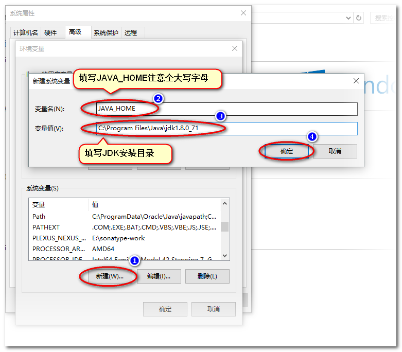
10. 修改Path环境变量, 在值中增加"JDK安装目录\bin":
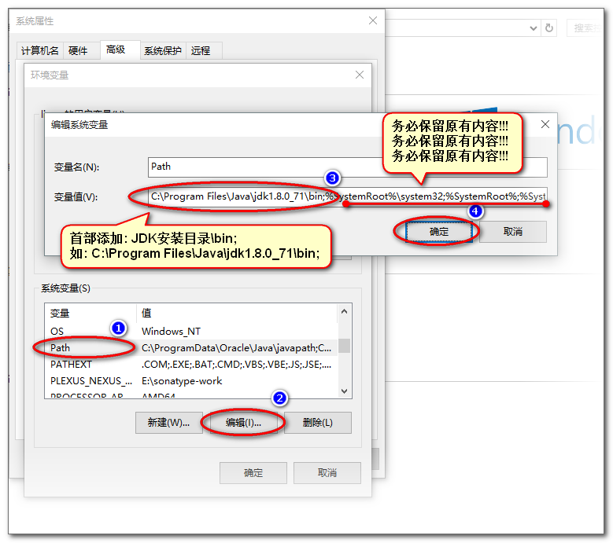
11. 增加环境变量 CLASSPATH, 其值是英文点 ".":
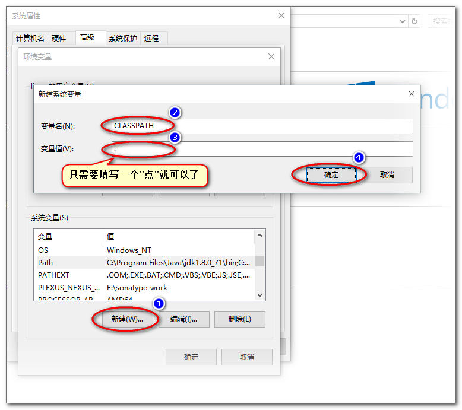
下载安装配置开发环境Eclipse
1. 用浏览器访问 http://www.eclipse.org 下载Eclipse:
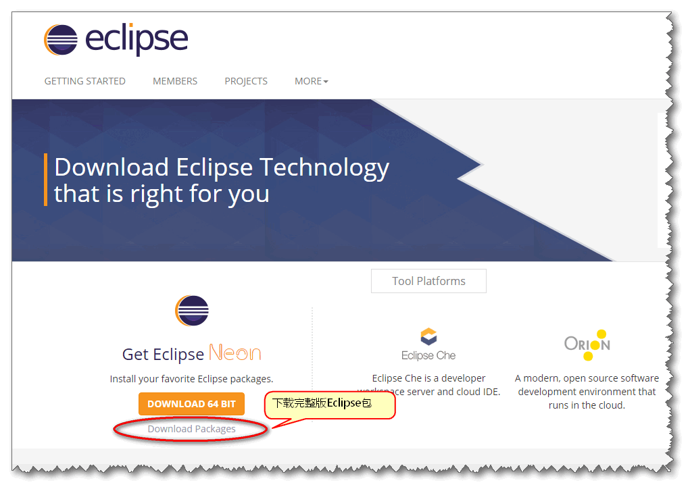
2. 进入下载页面,下载Java EE版本的Eclipse:
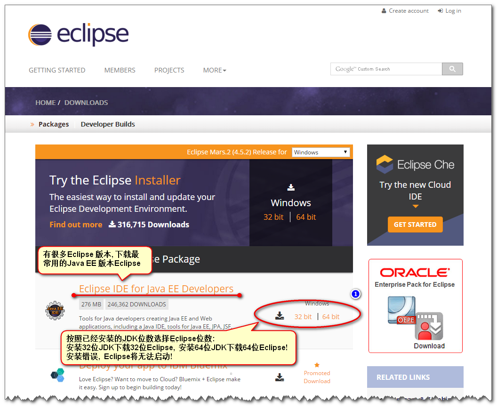
3. 在下载镜像选择页面, 点击 Download 即可:
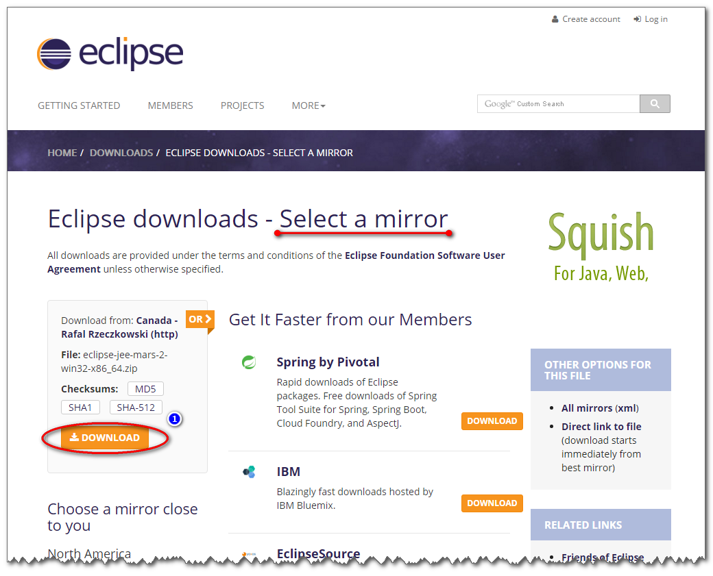
4. Eclipse会自动开始下载:
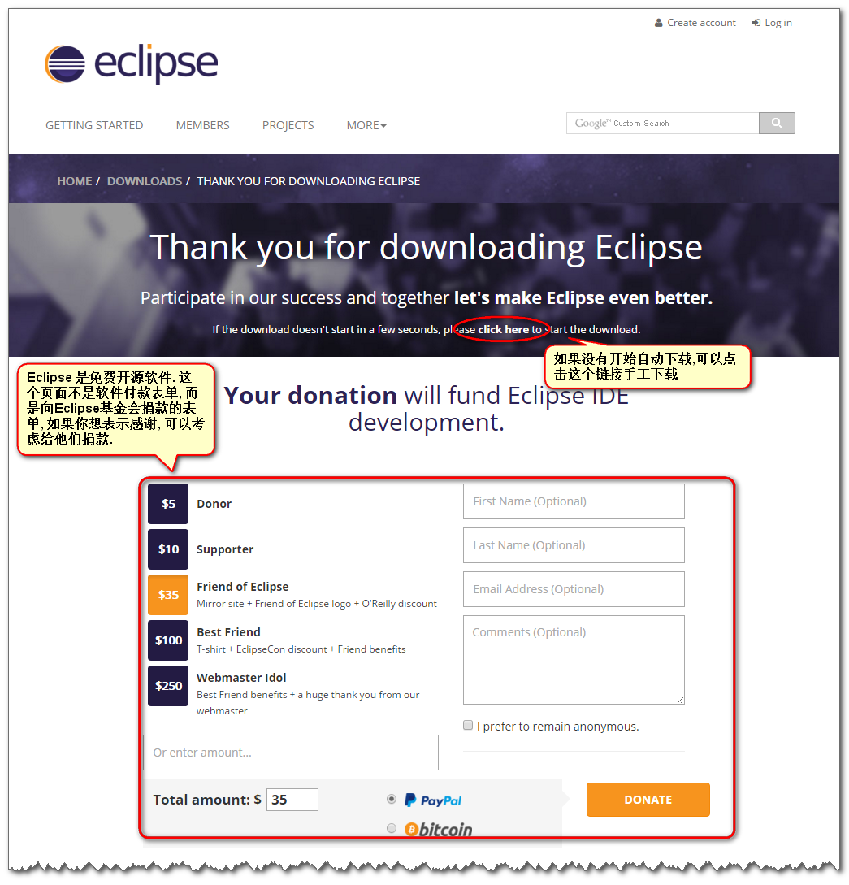
5. Eclipse是绿色软件, 没有安装过程, 释放zip包即可:
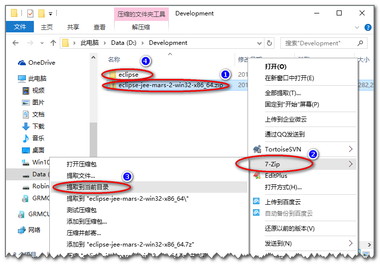
6. 进入eclipse文件夹, 双击eclipse.exe, 就可以执行Eclipse程序:
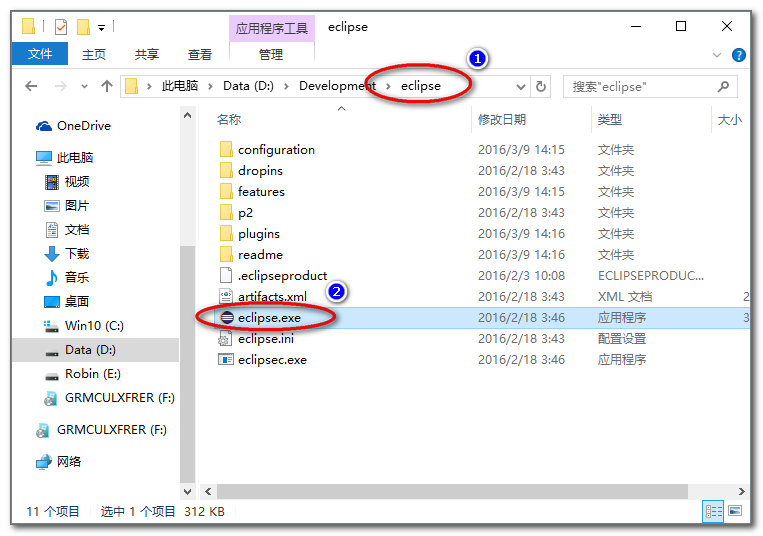